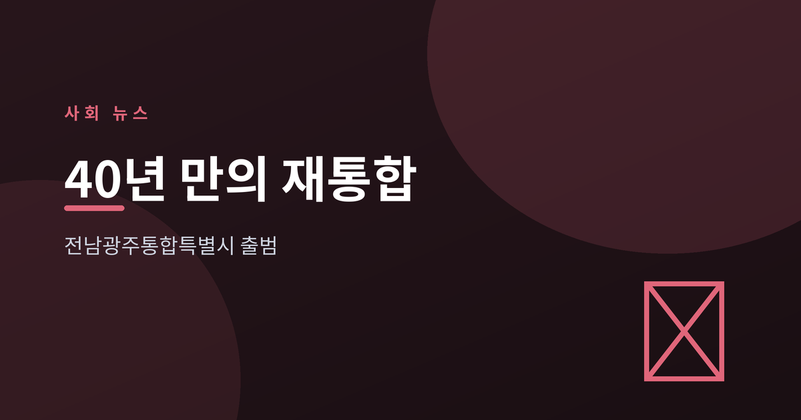
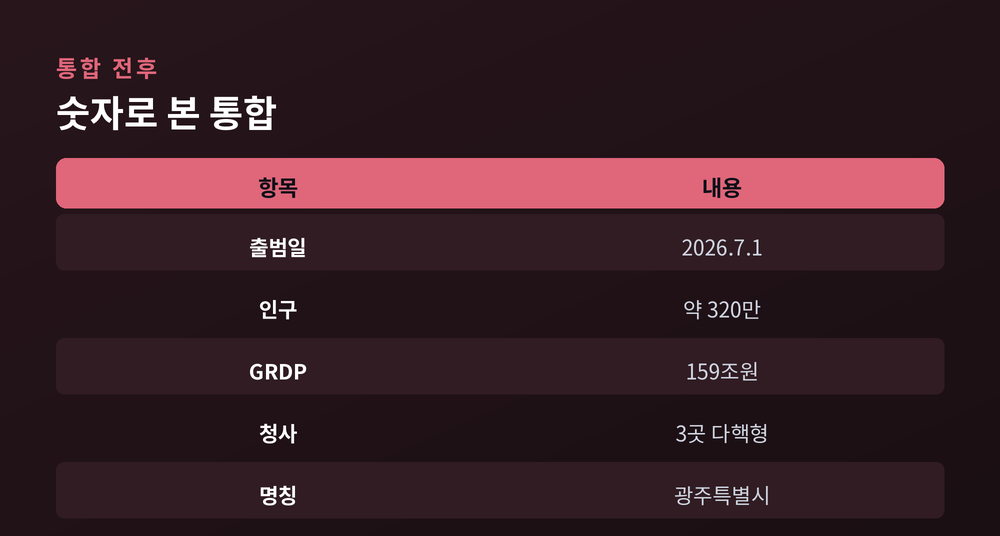
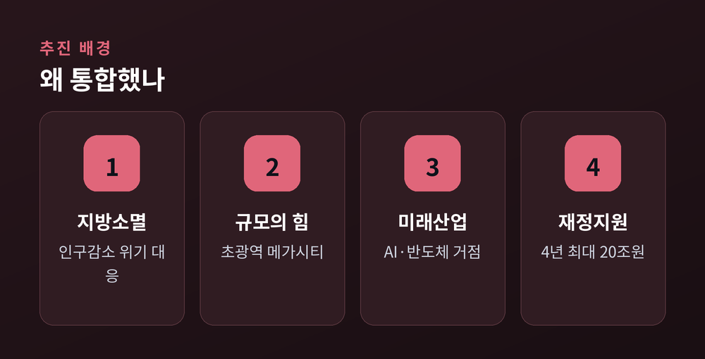
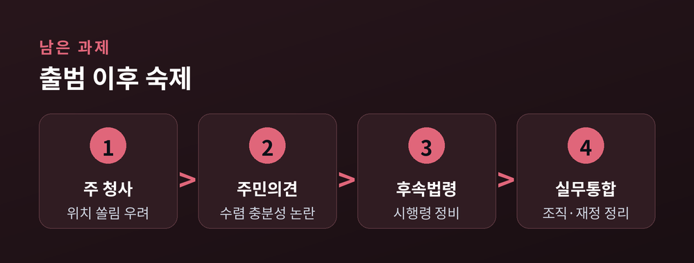

40년 만의 재통합, 그 무게를 읽다

2026년 7월 1일, 전남광주통합특별시가 공식 출범했다. 1986년 광주가 직할시로 분리된 지 40년 만에 두 지역이 하나의 행정구역으로 다시 묶였다. 인구 약 320만 명의 초광역 지방정부가 새로 등장한 것이다.
전라남도와 광주광역시가 하나로 통합됐다. 새 이름은 전남광주통합특별시이며, 약칭으로 광주특별시가 함께 쓰인다. 대한민국 첫 통합특별시다.
규모는 작지 않다. 통합 뒤 인구는 약 320만 명, 지역내총생산(GRDP)은 159조 원 규모로 집계된다 (출처: 경향신문). 근거 법률인 설치 특별법은 2026년 3월 5일 제정돼 7월 1일 시행됐다 (출처: 국가법령정보센터).
청사는 한 곳에 몰아넣지 않았다. 광주 청사, 무안 청사, 전남 동부 청사를 함께 두는 다핵형 체제로 운영한다 (출처: 대한민국 정책브리핑). 지역 간 균형과 갈등 완화를 염두에 둔 설계다.

핵심 배경은 인구 감소와 지방소멸 위기다. 수도권 집중이 이어지는 사이 비수도권은 인구가 빠져나갔다. 개별 광역단체 단위로는 대응에 한계가 뚜렷했다.
통합은 이 흐름에 맞선 시도다. 행정을 하나로 묶어 규모를 키우고, 인공지능·반도체·모빌리티 같은 미래 산업의 거점을 함께 육성한다는 구상이다 (출처: 대한민국 정책브리핑). 수도권 일극 체제를 누그러뜨리고 권역별 성장 거점을 만든다는 국가 균형발전 논리와 맞닿아 있다.
정부의 재정 지원도 뒤따른다. 4년간 연 5조 원씩 최대 20조 원을 지원하기로 했다 (출처: 파이낸셜뉴스). 다만 지원금의 구체적 사용처는 아직 뚜렷이 제시되지 않았다는 지적이 함께 나온다.

가장 뜨거운 쟁점은 주 청사 위치다. 기능이 특정 권역으로 쏠리면 소외 지역이 생긴다는 우려가 나온다. 전남 서부권이 밀릴 경우 통합의 명분인 균형발전 자체가 흔들릴 수 있다는 지적이다 (출처: 파이낸셜뉴스).
절차 속도도 논점이다. 통합이 정치권 주도로 빠르게 진행되면서, 주민 의견 수렴이 충분했는지를 두고 평가가 갈린다. 지방선거 전까지 시행령 등 후속 법령을 마련하는 일정도 촉박했다 (출처: 대한민국 정책브리핑).
여기에 명칭 정리, 방대한 조직·재정 통합, 공문서와 도로표지판 교체 같은 실무 과제가 겹겹이 남아 있다. 제도가 출범했다고 통합이 끝난 것은 아니라는 뜻이다.

행정통합은 지방소멸이라는 구조적 위기에 대한 실험적 답안이다. 규모의 힘을 얻는 대신, 권역 간 균형과 주민 동의라는 숙제를 함께 안았다. 출범은 시작일 뿐이며, 통합의 성패는 앞으로의 운영에서 판가름 날 것이다.